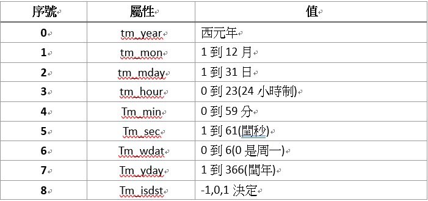
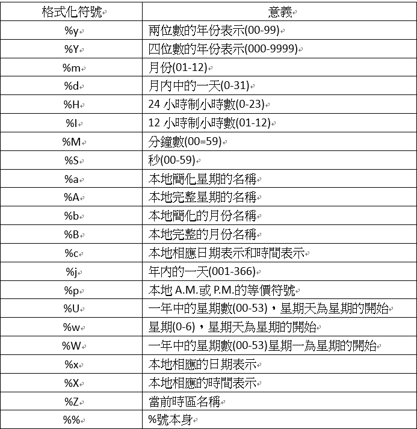

Python是以tick作為時間的計算單位，而其時間的精確度可以到百萬分之一秒，是一個的時間，以微秒為單位的float數值。
使用time模組的time.time()函數可以取得秒數。注意，此時取得的tick總數是依照格林威治標準時間計算，而不是使用者所在的時區計算。
示範程式碼
01 import time #匯入time模組
02
03 ticks=time.time()
04 print(“Number of tick since 12:00am,January 1,1970:”,ticks)
執行結果
Number of ticks since 12:00am,January 1,1970:1403342960.393071
>>>
第一航的import指令是為了匯入time，另外ticks為1400041473.279724，要配合time模組中的各種函數來將他轉換成常見的時間模式。
Time模組的屬性包括:
˙ timezone
這個屬性代表所在時區和格林威治標準時間的差異，以秒為單位，資料型態是int。
˙ altzone
這個屬性代表所在的時區與格林威治標準時間的DST(日光節約時區)的差異，以秒為單位，資料型態是int。
˙ daylight
這個屬性會回傳使用者本地是否有使用日光節約時間，型態為int，0代表沒有，1代表有。
Time模組的函數:
˙ time()
以float型態迴船從1970年1月1日0點到現在總共經過多少秒
˙ sleep(seconds)
接受ine型態的參數。python休息的函數，所輸入的參數就是python休息的秒數。
˙ clock()
回傳float值。呼叫函數會發生兩種情形，第一次會回傳此程序實際運行時間，第二次以後將會回傳與第一次呼叫的時間差異。
Time模組之屬性說明

˙ localtime(【seconds】)
和gmtime()相似，唯一差別在於不管有沒有傳入參數，localtime()跟gmtime()所傳回的tuple資料都會有相同時差的時數，差異多寡取決於所在地區與標準時區的時差。
˙ asctime(【tuple】)
接受tuple型態的時間資料當作傳入參數，並將其轉換為字串刑事回傳str值。此函數的功能與time.strptime()剛好完全相反。一個是將tuple型態轉為str型態，另一個反之。
˙ ctime(【seconds】)
接受int或float型態的資料為傳入參數。會以1970年1月1日0點為起點開始加入傳入的秒，以str型態回傳加總之後的當地時間。如果沒有傳入參數，則預設以現在的當地時間轉換為seconds傳入。
˙ mktime(tuple)
具有時間之九個屬性值得tuple為傳入參數，並回傳float型態的數值，內容為傳入參數的時間換算為自1970年1月1日0點到現在所經過的秒數。
˙ strftime()
Strf是string format的簡稱。接收tuple型態的傳入參數，並可以依照所需的格式設定，可以說是時間函數的格式化輸出。
Time的格式化意義說明

˙ strptime(string,format)
Strp是string parse的簡稱。接受一個字串參數與一個格式參數，然後會回傳時間的tuple。這個函數和strftime()恰好對應。一個案格式輸出，一個案格式接收。